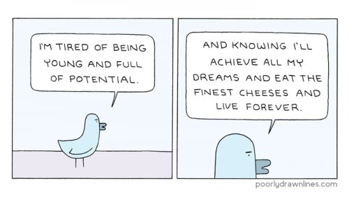

--Ashtavakra Gita
“You don't want to be an ordinary person. That is really the problem. It is the most difficult thing to be an ordinary person. Culture demands you must be something other than what you are. That has created a certain momentum -- a tremendous, powerful movement of thought. That's all that it is. Otherwise it has no use.”
--UG Krishnamurti
“Anything you want to achieve is a self-centered activity.”
--J. Krishnamurti
In my work, things often come in waves, and lately there’s been a renewed influx of clients whose favorite pain is, “I haven’t reached my full potential. I am a failure.”
I say “renewed” because waves like this have happened before- people looking for help with their unmet-potential selves.
It’s a popular reason to hate ourselves, this potential business.
Not achieved enough, not there yet, may never be, wasted life, wasted glory. Deserves-to-suffer Loser.
Good ol’ potential.
So often sought, so often strived for-- years, decades, lifetimes-- and yet so rarely attained.
And to be clear, we’re talking about not just potential, folks, but FULL potential. The BEST potential.
Because it’s not enough, if we’re smart or talented, to only get a nice little job and be an average weekend-enjoying person supporting a family and doing just enough to have an ordinary life.
No. We have to have the whole sparkling enchilada or none of it is good enough.
Ordinary equals failure.
And why? All because some teacher somewhere long ago, or some parent convinced that only greatness will do for their little one, told us we were special and that it was important-
required, even,
to turn talent into something. Grades, money, awards, acclaim, fame, fancy titles.
Something. Get to it.
Never mind that so many kids hear this same story that it’s commonplace.
In fact, since almost no one else reaches their Full Potential either, then not reaching that pinnacle is actually the norm. It’s as ordinary as breathing.
Y'know- the opposite of special.
Still the non-Full-Achiever suffers, thinking they alone are failing.
There’s only one little problem with this set-up for misery.
Potential, full or otherwise, does not exist.
It’s a humans-made-it-up concept which helps no one and ruins perfectly good lives.
Potential is a story of how life should be someday, an idealized dream, a fantasy future which never actually arrives.
It’s the opposite of presence, the opposite of Be Here Now, the opposite of This Is It.
Instead, Potential is later, it’s future, it’s imagination. Potential is, “Let’s watch a mental movie of a great someday life and then beat ourselves up for not living up to that fiction.”
Can you say, “Horror movie,” boys and girls?
And the thing is, it’s not even our fantasy. It’s someone else’s, and we, in our innocence, take it on.
Some earnest teacher says, “This is how you’re supposed to live, this is what you’re capable of, and you must do what you’re capable of.”
And not knowing we can question whether capability must actually equal requirement, we believe them.
We adopt their standard, their dream, and then torture ourselves with our inadequacy for the rest of time.
Whole lives evaluated and measured against someone else’s dream.
Ouch.
The wild thing too, which most of us ordinary non-achievers would have no way of knowing, is that when those rare and special few actually do reach Full Potential-
the Madonnas and Steve Jobs and Kurt Cobains and Simone Biles and Anthony Bourdains and Nobel Prize winners-
Full Potential turns out to be
not enough.
Because look closely and we discover that those "successful" folks are also anxious and inadequate and unhappy. Those same folks also experience depression, despair, thoughts of fraud, thoughts of suicide.
Just like us Joe Schmoes.
Potential is not actually ever Full.
It’s always empty.
As any fantasy story must be.
It's never enough.
Which is maybe why that inner voice we all experience- the one that insists we shouldn’t be happy with this, we shouldn’t settle for that, we need to do more, and something is clearly wrong with us for notdoing more…
maybe that voice needs to finally just shut the hell up.
Because imagine the same exact life we currently have- achievements or non-achievements, here in this moment-
if that life wasn’t evaluated on the basis of getting or reaching some mythical story of Potential.
Imagine the same exact life we currently have, if it was enough as it is.
See now, that might be special.
Peaceful.
Full.
Complete.
Who knows?
There just might be potential
In that.
“There is nothing to achieve, there is nowhere to go, there is nothing to be done. We are already divine and we are already perfect - as we are. No improvement is needed, no improvement at all. God never creates anybody imperfect.“
--Osho
"Of what use is the universe? What is the practical application of a million galaxies?"
--Alan Watts
